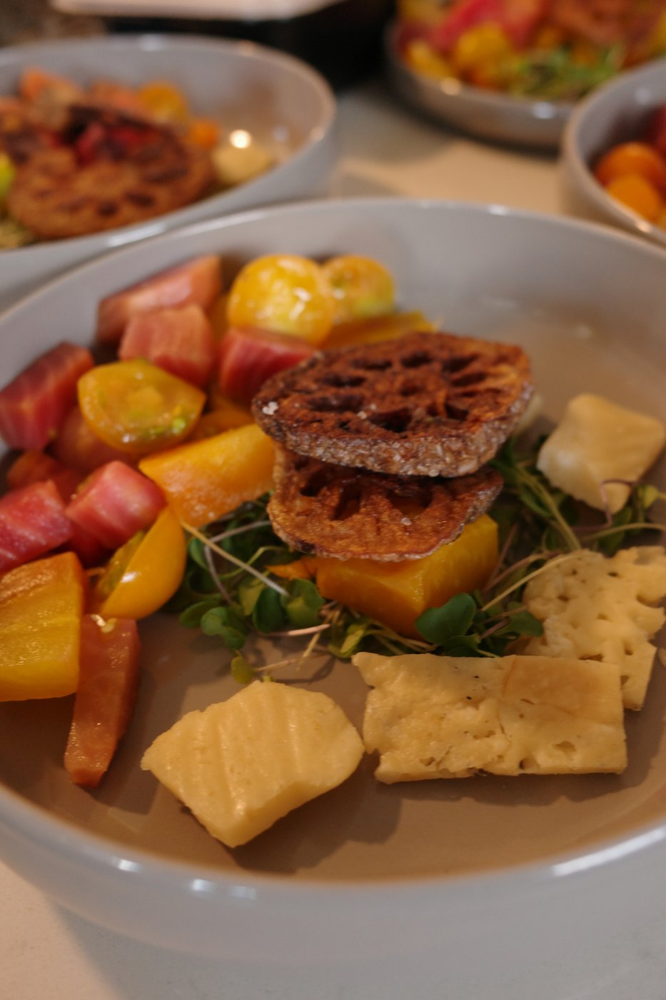

amber.COURSE 01 — AMBER
Golden Beets, Parmesan Crisp, Citrus
PAIRING
Tirriddis Brut Rosé N.V. · Columbia Valley
dry, low residual sugar — a crisp, acid-driven opener.
méthode traditionnelle — the same secondary-fermentation-in-the-bottle process as Champagne. The winery's name literally spells out the three steps: tirage, riddle, disgorge. Made in Prosser, WA, one of Washington's oldest wine regions.